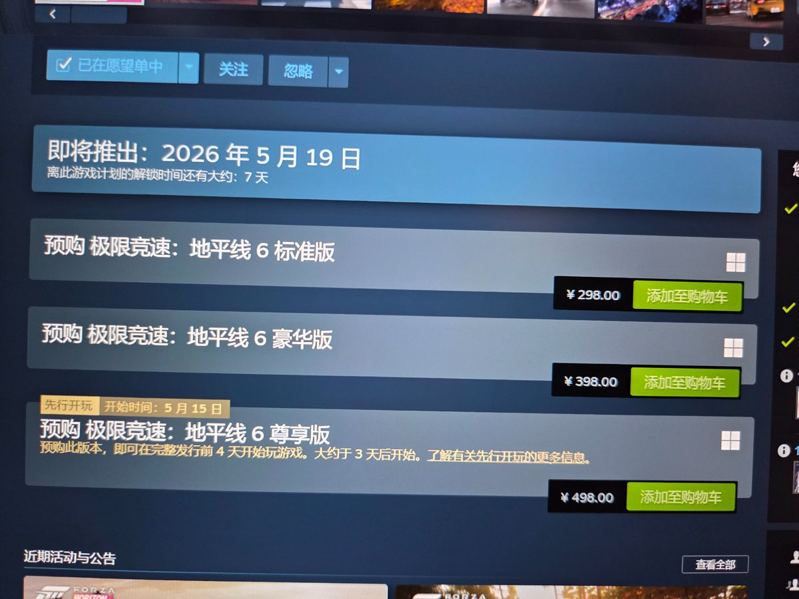

由于 Steamworks 发布失误，《极限竞速：地平线 6》在发售前出现无 DRM 保护的可玩版本泄露。微软随即采取空前严厉措施，对提前进入游戏的玩家处以硬件 ID 封禁，并将解封日期设为 9999 年 12 月 31 日
微软对《极限竞速：地平线 6》泄露玩家实施近 8000 年硬件封禁一事在该系列 Reddit 子版块的多篇帖子提到，称玩家因“作弊/未经允许的修改”而受罚
此次封禁的惩罚力度在于其硬件指向：重装系统无法解除，被封账号在同一设备上无法恢复，受影响者要么依赖不可靠且常捆绑恶意软件的硬件 ID 欺骗器，要么必须更换主板。游戏即将于 5 月 19 日正式发售，已预购的玩家仍需等待数日才能合法体验
微软对《极限竞速：地平线 6》泄露玩家实施近 8000 年硬件封禁一事在该系列 Reddit 子版块的多篇帖子提到，称玩家因“作弊/未经允许的修改”而受罚
此次封禁的惩罚力度在于其硬件指向：重装系统无法解除，被封账号在同一设备上无法恢复，受影响者要么依赖不可靠且常捆绑恶意软件的硬件 ID 欺骗器，要么必须更换主板。游戏即将于 5 月 19 日正式发售，已预购的玩家仍需等待数日才能合法体验
